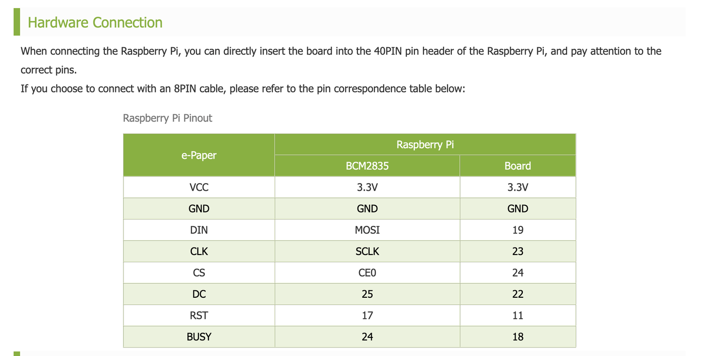
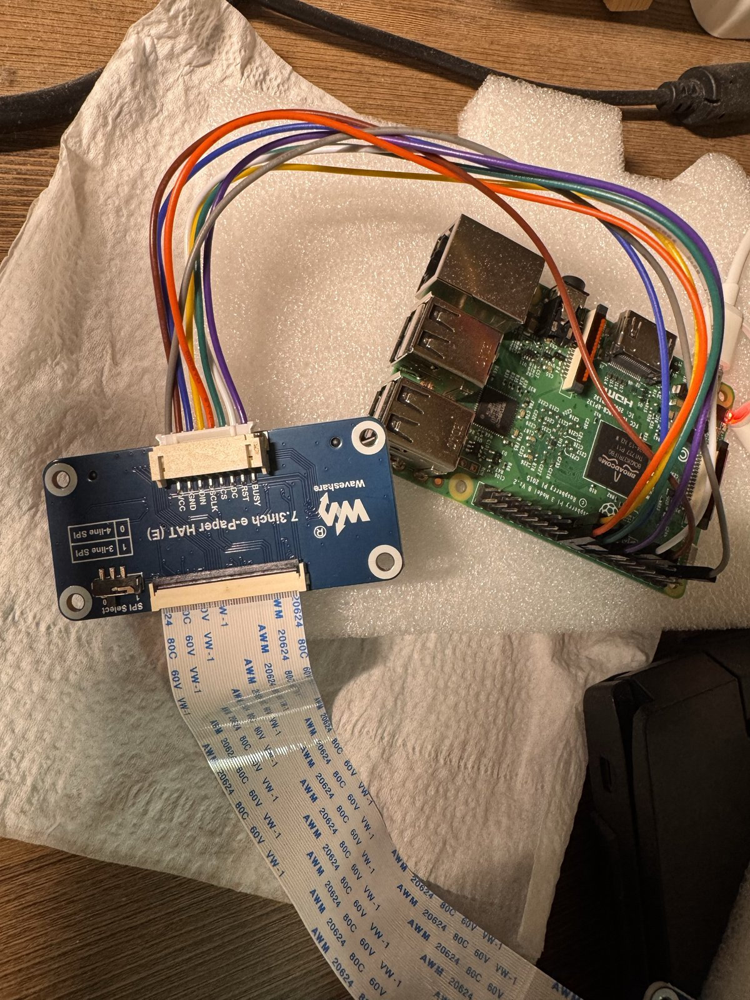
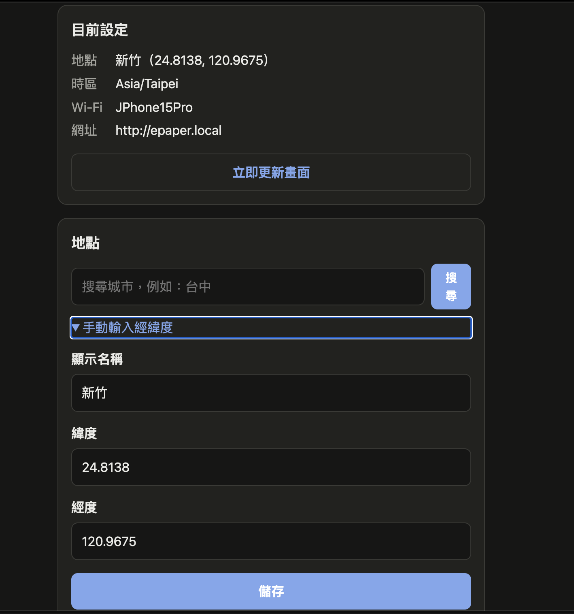
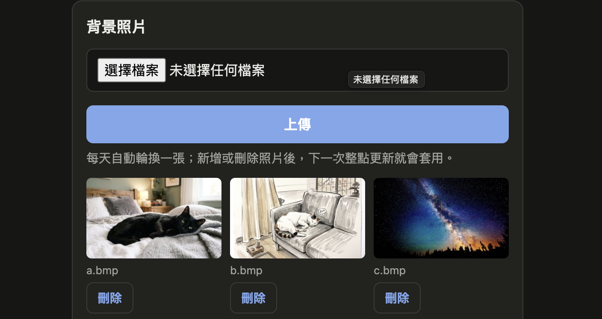
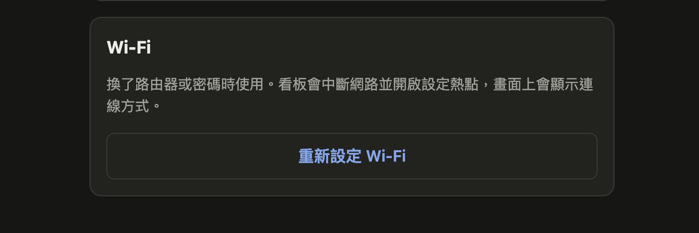
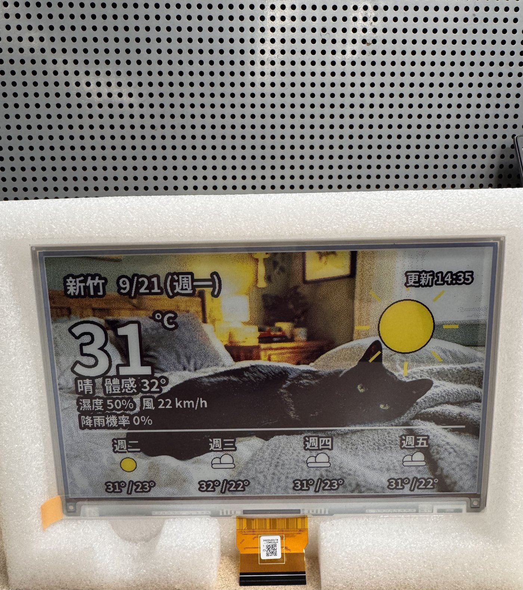
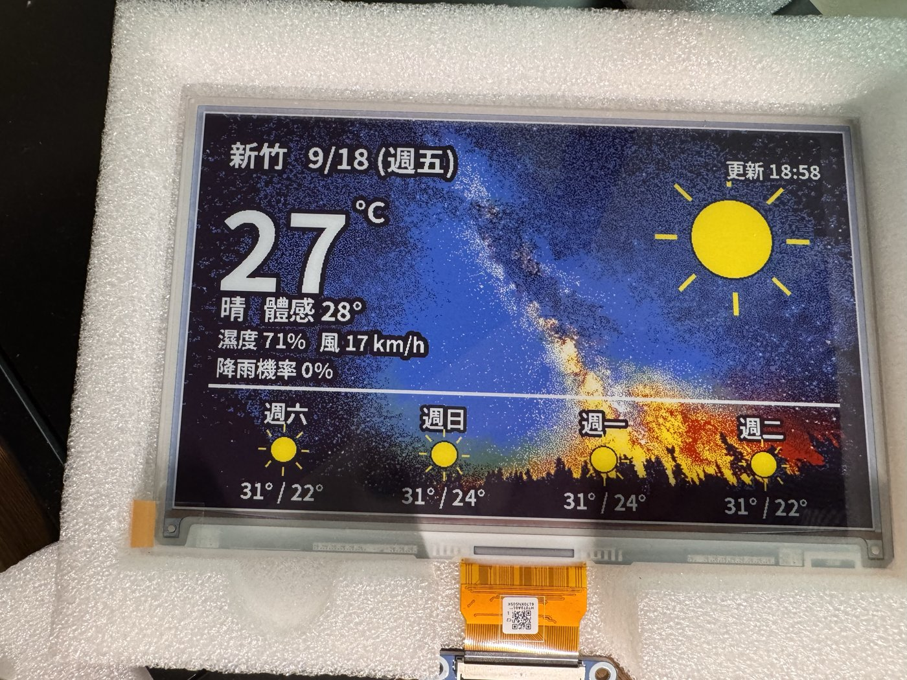
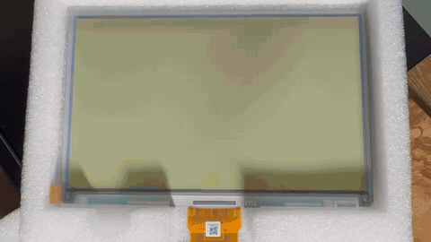

E-Paper Photo Frame
Spectra 6 (E6) Full-Color e-Paper Weather Dashboard on Raspberry Pi 3Version: 1.2.0Author: JDate: 2026/10/09
File History :
| Type | Description | Name | Date |
|---|---|---|---|
| v1.0.0 first release | 7.3" E6 (epd7in3e) photo frame + weather dashboard + hourly update | J | 2026/09/21 |
| v1.1.0 second release | Removed the weather icon in the top-right corner; added --lat / --lon / --loc arguments with input validation |
J | 2026/09/29 |
| v1.2.0 third release | Added Wi-Fi setup mode (hotspot + QR codes + captive portal) and a settings web page; location now stored in config.json |
J | 2026/10/09 |
Table of contents
- Table of contents
- Test Environment
- 0. Overview
- 1. Hardware
- 1.1. Panel specification
- 1.2. Wiring
- 2. Raspberry Pi setup
- 3. Install this project
- 4. Configuration
- 5. Usage
- 6. Color calibration
- 7. Auto update with systemd
- 8. Wi-Fi setup & settings page
- 9. How it works
- 10. Result
- 11. Precautions
- 12. Troubleshooting
- 13. Porting to another panel
- 14. References
Test Environment
| Item | Version / Model | Comments |
|---|---|---|
| Board | Raspberry Pi 3 Model B V1.2 | Also works on 3B / 3B+ |
| OS | Raspberry Pi OS | Python 3.13 |
| e-Paper | Waveshare 7.3inch e-Paper HAT (E) | E Ink Spectra 6 (E6), 800 × 480 |
| Driver | waveshare/e-Paper epd7in3e |
RaspberryPi_JetsonNano/python/lib |
| Python libs | python3-pil, python3-numpy, spidev, gpiozero, python3-flask, python3-qrcode | All installed via apt |
| Font | fonts-noto-cjk | CJK font |
| Weather API | Open-Meteo | No API key required |
0. Overview
This project connects a Waveshare 7.3" Spectra 6 six-color e-Paper display to a Raspberry Pi 3 to build a "photo + weather" digital photo frame:
- The background is your own photo, which changes automatically once a day (or you can pin a specific one)
- The photo is overlaid with the current temperature, weather description, feels-like temperature, humidity, wind speed, chance of rain, and a 4-day forecast
--lat/--lon/--loclet you look up a different location on the fly without affecting the scheduled defaults- The dashboard refreshes once when the Pi boots and connects to the network, then on the hour every hour thereafter
- If there's no network, it skips the refresh — but if more than 20 hours pass without a refresh, it force-refreshes using cached data (the panel spec requires at least one refresh every 24 hours)
- If the rendered content hasn't changed (aside from the timestamp), the refresh is skipped to reduce flicker and panel wear
- With no network, the panel shows QR codes so Wi-Fi and location can be set up from a phone; afterwards a settings web page changes the location and takes photo uploads, no SSH needed (see section 8)
Main scripts:
| Script | Purpose |
|---|---|
epaper_photo.py |
Image processing pipeline (gamut compression + dithering), panel setup, single-photo display, color calibration |
dashboard.py |
The weather dashboard main program: fetches weather, overlays text/icons, refreshes the panel |
recover.py |
Panel diagnostics (all-black test) and ghosting recovery (alternating black/white or six-color full refresh) |
portal.py |
Wi-Fi setup mode (hotspot, QR codes on the panel, captive portal) and the settings web page |
wifi.py |
nmcli wrapper: scan, hotspot on/off, join a network |
config.py |
Reads, writes, and validates config.json (location, time zone); shared by dashboard.py and portal.py |
1. Hardware
1.1. Panel specification
| Item | Spec |
|---|---|
| Resolution | 800 × 480 |
| Display area | 160.0 mm × 96.0 mm |
| Dot pitch | 0.2 mm (≈127 ppi) |
| Colors | E6: black, white, yellow, red, blue, green |
| Full refresh time | ≈25 s (flickering during refresh is normal) |
| Interface | SPI (mode 0) |
| Operating voltage | 3.3 V / 5 V |
| Operating temp. | 0 ~ 50 °C |
1.2. Wiring
The driver board can plug directly onto the Pi's 40-pin header, or connect via the included 8-pin cable. When using the 8-pin cable, refer to the table below:
| e-Paper | BCM | Board pin |
|---|---|---|
| VCC | 3.3V | 3.3V |
| GND | GND | GND |
| DIN | MOSI | 19 |
| CLK | SCLK | 23 |
| CS | CE0 | 24 |
| DC | 25 | 22 |
| RST | 17 | 11 |
| BUSY | 24 | 18 |
Raspberry Pi pinout (source: Waveshare Wiki)

Actual wiring: 8-pin cable connecting the 7.3inch e-Paper HAT (E) to a Raspberry Pi 3 Model B

Wiring notes:
- Set the SPI Select switch on the driver board to
0(4-line SPI) - Keep the 8-pin extension cable under 20 cm; longer cables can cause data loss or screen shifting
- The panel's FPC ribbon cable is fragile: only bend it horizontally along the screen, never fold it vertically, never fold it toward the front of the screen, and avoid repeated bending. The FPC connector is a 0.5 mm pitch flip-lock type — lift the latch before inserting or removing the cable, and always fully power off first
2. Raspberry Pi setup
Step 1. Enable SPI
$ sudo raspi-config
# Interface Options -> SPI -> Yes
$ sudo reboot
$ ls /dev/spi* # should show /dev/spidev0.0 /dev/spidev0.1
Step 2. Install packages
$ sudo apt update
$ sudo apt install python3-pip python3-pil python3-numpy python3-spidev python3-gpiozero fonts-noto-cjk \
python3-flask python3-qrcode avahi-daemon
Step 3. User groups (no sudo required to run the scripts)
A regular user only needs to be in the spi and gpio groups to drive the panel. This project's scripts should never be run with sudo (see 12. Troubleshooting).
$ id # confirm you're in spi and gpio
$ sudo usermod -aG spi,gpio $USER # if not, add yourself and log back in
Step 4. Download the official Waveshare driver and run the official example first
Confirm the hardware and wiring work before running this project:
$ mkdir -p ~/workspace && cd ~/workspace
$ git clone https://github.com/waveshare/e-Paper.git
$ cd e-Paper/RaspberryPi_JetsonNano/python/examples
$ python3 epd_7in3e_test.py
Only move on to the next step once the official example displays the six-color test graphics and sample image correctly.
3. Install this project
Directory structure:
~/epaper/
├── epaper_photo.py
├── dashboard.py
├── recover.py
├── portal.py
├── wifi.py
├── config.py
├── config.json # location and time zone, written by the settings page (appears after first setup)
├── templates/ # settings page templates
├── help/ # help pages (generated from the READMEs by build_help.py)
├── lib -> ~/workspace/e-Paper/RaspberryPi_JetsonNano/python/lib (symlink)
├── bg/ # background photos: jpg / png / bmp
├── systemd/
│ ├── epaper-dash.service
│ ├── epaper-dash.timer
│ └── epaper-portal.service
├── polkit/
│ └── 50-epaper-networkmanager.rules
├── networkmanager/
│ └── captive-portal.conf
└── img/ # images used in the README
$ mkdir -p ~/epaper/bg && cd ~/epaper
# copy all .py files, help/, img/, templates/, systemd/, polkit/ and networkmanager/ here
# link in Waveshare's python lib (note: it's the python/lib level, not waveshare_epd)
$ ln -s ~/workspace/e-Paper/RaspberryPi_JetsonNano/python/lib ~/epaper/lib
$ ls ~/epaper/lib/waveshare_epd/epd7in3e.py # if this lists the file, the link is correct
# add a few background photos
$ cp ~/Pictures/*.jpg ~/epaper/bg/
If
~/epaper/libalready exists as a directory,ln -swill createlib/libinside it and the import will still fail. Remove it first, then recreate the symlink.
4. Configuration
epaper_photo.py: panel and image processing
| Parameter | Default | Description |
|---|---|---|
DRIVER |
"epd7in3e" |
Waveshare driver module name |
W, H |
800, 480 |
Panel resolution |
PALETTE_SRGB |
estimated value | Measured primary colors of your panel — must be calibrated (see section 6) |
EXPOSURE |
1.25 |
>1 brightens midtones; increase if photos look too dark |
SATURATION |
1.25 |
Saturation pre-compensation (dithering tends to wash colors out) |
LOCAL_AMOUNT |
0.55 |
Local contrast (unsharp masking); 0 disables it |
dashboard.py: dashboard content and refresh strategy
| Parameter | Default | Description |
|---|---|---|
DEFAULT_LAT/LON |
from config.json |
Default weather query coordinates; override with --lat / --lon |
DEFAULT_PLACE |
from config.json |
Default location name shown on screen; override with --loc |
TZ |
from config.json |
Timezone |
SCRIM |
0.0 |
Background darkening amount. 0 = photo as-is; text readability relies on a black outline |
SCRIM_BANDS |
False |
Additionally darken the top and bottom UI bands |
MIN_INTERVAL |
180 |
Minimum refresh interval in seconds, required by the panel spec |
MAX_AGE |
20 * 3600 |
Force a refresh if this much time passes without one (panel spec requires < 24 h) |
config.json: location and time zone
Written by the settings page; you can also edit it by hand. If the file is missing or a value is invalid, that value falls back to DEFAULTS in config.py (Hsinchu 24.8138, 120.9675, Asia/Taipei) and the dashboard keeps running.
{
"lat": 24.8138,
"lon": 120.9675,
"place": "新竹",
"tz": "Asia/Taipei"
}
5. Usage
Run all commands as a regular user — do not use sudo.
Weather dashboard dashboard.py
$ cd ~/epaper
$ python3 dashboard.py # normal update (subject to refresh-protection rules)
$ python3 dashboard.py --force # skip all protection rules and refresh immediately
$ python3 dashboard.py --bg bg/a.jpg --force # use a specific background photo (bypasses daily rotation)
$ python3 dashboard.py --preview /tmp/p.png # render to PNG only, don't touch the panel
$ python3 dashboard.py --lat=25.033 --lon=121.5654 --loc=Taipei --force
$ python3 dashboard.py --help # full argument reference
Location arguments --lat / --lon / --loc
When not specified, the location comes from config.json (written by the settings page; Hsinchu if the file doesn't exist). The systemd service doesn't pass these arguments, so scheduled auto-updates always use the location in config.json — using the arguments for a one-off lookup elsewhere doesn't affect the schedule.
Validation rules:
| Rule | Description |
|---|---|
--lat must be a number between -90 and 90 |
Non-numeric or out-of-range values exit immediately with an error (exit code 2) |
--lon must be a number between -180 and 180 |
Same as above |
--loc cannot be blank, cannot contain control characters, and is capped at 12 characters |
Prevents the title bar from overflowing |
If --lat / --lon is given, --loc must be given too |
Otherwise the displayed place name would be wrong (coordinates changed but the label didn't) |
When the coordinates differ from the cached ones, the offline cache weather.json is treated as belonging to a different location and is not used — this prevents showing weather data for the previous location.
⚠️ The
--previewargument is an output path. Don't point it at a source file insidebg/— the program refuses to write intobg/.
Single photo epaper_photo.py (no weather overlay)
$ python3 epaper_photo.py bg/a.jpg
$ python3 epaper_photo.py bg/a.jpg --preview /tmp/p.png
This script has no UI overlay, making it the cleanest tool for tuning EXPOSURE or verifying color calibration.
Panel diagnostics and recovery recover.py
$ python3 recover.py --black # single all-black refresh, to tell ghosting apart from hardware damage
$ python3 recover.py # 8 rounds of alternating black/white (~1 hour, 185 s between each)
$ python3 recover.py --colours # cycles red/green/blue/yellow first, then black/white (stronger effect)
Recommended tuning workflow: use --preview to dial in layout and brightness on a PNG first, and only refresh the actual panel once you're happy with the result — this avoids wearing out the panel while iterating on parameters.
6. Color calibration
The E6 panel's actual primary colors are noticeably darker and less saturated than their nominal values, and colors vary between batches. If dithering computes error against the nominal colors (pure 0/255), the result looks dull and dark. Every panel should be measured once:
$ python3 epaper_photo.py --calib
- The panel displays six solid color swatches (black, white, yellow, red, blue, green)
- Photograph it straight-on under white (daylight) light, avoiding reflections
- Use image editing software to sample the average RGB value at the center of each swatch
- Enter the values into
PALETTE_SRGBinepaper_photo.py(order: black, white, yellow, red, blue, green) - Clear the background cache and re-run
$ rm -f .bg_cache.npz .frame_sig
$ python3 dashboard.py --force
7. Auto update with systemd
systemd/epaper-dash.service (update User and the paths to match your own account)
[Unit]
Description=e-Paper weather dashboard
Wants=network-online.target
After=network-online.target
[Service]
Type=oneshot
User=ej
WorkingDirectory=/home/ej/epaper
ExecStart=/usr/bin/python3 /home/ej/epaper/dashboard.py
systemd/epaper-dash.timer
[Unit]
Description=Refresh e-Paper dashboard hourly and at boot
[Timer]
OnBootSec=2min
OnCalendar=*-*-* *:00:00
Persistent=true
RandomizedDelaySec=30
[Install]
WantedBy=timers.target
| Setting | Effect |
|---|---|
OnBootSec=2min |
Updates once after boot, once the network is up |
OnCalendar=*:00:00 |
Updates on the hour, every hour |
Persistent=true |
Catches up on a missed run (e.g. while powered off) after boot |
RandomizedDelaySec |
Avoids all triggers firing at exactly the same instant |
The service's ExecStart doesn't pass any location arguments, so scheduled updates always use the location in config.json. To change the scheduled location, use the settings page (see section 8) or edit config.json — don't modify the service file.
Install and verify:
$ sudo cp ~/epaper/systemd/epaper-dash.* /etc/systemd/system/
$ sudo systemctl daemon-reload
$ sudo systemctl enable --now epaper-dash.timer
$ systemctl list-timers epaper-dash.timer
$ journalctl -u epaper-dash.service -n 50 --no-pager
Each run, dashboard.py evaluates the following in order:
flowchart TD
A[Timer fires] --> S{Wi-Fi setup screen showing?}
S -- Yes --> X[Skip]
S -- No --> B{Less than 180s since last refresh?}
B -- Yes --> X[Skip]
B -- No --> C{Network available?}
C -- No --> D{More than 20h since last refresh?}
D -- No --> X
D -- Yes --> E[Load cached weather, mark "offline"]
C -- Yes --> F[Fetch Open-Meteo weather]
E --> G[Compose frame]
F --> G
G --> H{Same as last frame?<br/>ignoring timestamp}
H -- Yes --> X
H -- No --> I[init → display → sleep]
8. Wi-Fi setup & settings page
This lets someone get the frame onto their home network and set the location and photos without SSH or editing code. The flow works like a retail smart plug: when there's no network, the Pi starts its own Wi-Fi hotspot, the panel shows QR codes, and setup happens on a phone.
flowchart TD
A[Boot] --> B{Saved network up within 90 s?<br/>Wi-Fi or Ethernet}
B -- Yes --> N["Normal mode<br/>settings page at hostname.local"]
B -- No / reset button held at boot --> S[Scan nearby Wi-Fi]
S --> H[Start hotspot ePaper-Setup-XXXX]
H --> P[Panel shows setup screen with two QR codes]
P --> W[Phone joins hotspot, setup page pops up<br/>pick Wi-Fi, enter password, city and PIN]
W --> C{Connected?}
C -- Yes --> G[Geocode city, write config.json]
G --> D[Refresh weather dashboard]
D --> N
C -- No --> H
What the user does
- Plug it in. After about 2 minutes the panel shows a "Wi-Fi 設定" (Wi-Fi setup) screen
- Scan the left QR code with the phone camera to join the hotspot (or join it manually with the name shown on screen). By default the setup hotspot has no password
- The phone usually opens the setup page by itself; if not, scan the right QR code or open
http://10.42.0.1/ - Pick the home Wi-Fi, enter its password, a city name, and the 6-digit PIN shown on the panel, and tap "連線" (Connect)
- Switch the phone back to the home Wi-Fi. On success the panel switches to the weather dashboard within 1–4 minutes; on failure the hotspot comes back, and after rejoining it the setup page shows what went wrong
From then on, http://<hostname>.local (e.g. http://epaper.local) on the same network lets you:
- Search for a city and change the location (via the Open-Meteo Geocoding API, so no coordinates needed), with a custom name for the header
- Upload or delete background photos, and see which one is up today
- Refresh the panel now
- Redo Wi-Fi setup (new router or new password)
- Read the help at
http://<hostname>.local/help: this README, with a Chinese/English switch (defaults to the browser language;?lang=zh-TW/?lang=enpicks one, and/help-zh-TW//help-enwork too). Flowcharts need internet to render and show as plain text offline
The help pages are pre-built HTML (help/help-zh-TW.html, help/help-en.html), so the Pi needs no Markdown library. After editing a README, rebuild them on your computer and commit them together with the README:
$ pip install markdown
$ python3 build_help.py
Settings page: current settings and location (search for a city, or enter coordinates by hand)

Settings page: uploading and deleting background photos

Settings page: redo Wi-Fi setup

City search can't happen on the Wi-Fi setup page itself: in setup mode neither the Pi nor the phone has internet. So that page only takes a city name, and the coordinates are looked up after the Pi joins the network (first result wins). If nothing matches, the settings page asks for a new search.
Photo EXIF orientation is not applied yet, so a portrait photo straight from a phone may appear rotated on the panel.
The setup screen shows a QR code for joining the hotspot on the left (WIFI: format, which both iOS and Android cameras can join directly), a QR code for the setup page URL in the middle, and the hotspot name, setup PIN, URL, and a "2.4 GHz only" note on the right (plus the hotspot password when AP_SECURITY = "wpa2").
Install
Requires Raspberry Pi OS Bookworm or later (NetworkManager by default).
$ cd ~/epaper
# 1. let your account drive NetworkManager (change "ej" in the file to your account first)
$ sudo cp polkit/50-epaper-networkmanager.rules /etc/polkit-1/rules.d/
# 2. captive portal: answer every DNS query on the hotspot with the Pi, so phones pop up the page
$ sudo cp networkmanager/captive-portal.conf /etc/NetworkManager/dnsmasq-shared.d/
# 3. hostname, which sets the settings page URL (here http://epaper.local)
$ sudo raspi-config nonint do_hostname epaper
# 4. start at boot (fix User and the paths first)
$ sudo cp systemd/epaper-portal.service /etc/systemd/system/
$ sudo systemctl daemon-reload
$ sudo systemctl enable --now epaper-portal.service
$ journalctl -u epaper-portal.service -f
systemd/epaper-portal.service
[Unit]
Description=e-Paper Wi-Fi setup portal and settings page
Wants=NetworkManager.service
After=NetworkManager.service
[Service]
User=ej
WorkingDirectory=/home/ej/epaper
ExecStart=/usr/bin/python3 /home/ej/epaper/portal.py
AmbientCapabilities=CAP_NET_BIND_SERVICE
Restart=on-failure
RestartSec=10
[Install]
WantedBy=multi-user.target
portal.py runs as a regular user: the polkit rule lets it drive NetworkManager, and AmbientCapabilities lets it bind port 80 (a captive portal has to be plain http:// on port 80). That way the state files it writes (.last_refresh and friends) have the same owner as dashboard.py's.
Testing
$ python3 portal.py --preview /tmp/setup.png # just look at the setup screen; no panel, no network
$ python3 portal.py --port 8080 --no-panel # work on the web pages (stop the service first)
To walk through the real flow, press "重新設定 Wi-Fi" (Redo Wi-Fi setup) on the settings page, or hold the reset button while booting. ⚠️ If you're connected over SSH via Wi-Fi, you'll lose the session.
Reset button (optional)
Wire a push button between BCM 26 (physical pin 37) and GND (pin 39), and hold it while booting to force setup mode. To use another pin, change BUTTON_PIN in portal.py. With no button wired nothing triggers (the internal pull-up is used), or you can set it to None.
portal.py settings and options
| Setting / option | Default | Description |
|---|---|---|
CONNECT_WAIT |
90 |
Seconds to wait for a saved network at boot. With no saved Wi-Fi at all it waits only 15 s (for Ethernet) |
BUTTON_PIN |
26 |
BCM pin of the reset button; None disables it |
AP_SECURITY |
"open" |
Setup hotspot security: "open" has no password, "wpa2" uses the password in .ap_psk (see below) |
PIN_TRIES / PIN_LOCKOUT |
5 / 300 |
After 5 wrong PINs, the setup form locks for 300 s |
--setup |
Start in setup mode | |
--preview OUT.PNG |
Render the setup screen to a PNG and exit | |
--port |
80 |
Web server port |
--no-panel |
Never refresh the panel (development) |
Why the setup hotspot has no password by default
On some Pi 3B units, a WPA2 hotspot started by NetworkManager makes phones report "incorrect password" every time, while an open hotspot on the same Pi works. This is a compatibility problem of the Wi-Fi chip in AP mode, not a wrong password. So the setup hotspot is open by default and protected by a PIN instead:
- Every time setup mode starts, a new 6-digit PIN is generated and shown only on the panel. The setup form won't submit without it, so a passer-by who joins the hotspot can't change anything
- After 5 wrong PINs the form locks for 5 minutes
- The hotspot only exists during setup and goes away once the home Wi-Fi is joined
- If WPA2 hotspots work on your Pi, set
AP_SECURITYinportal.pyto"wpa2"; the hotspot then uses the password in.ap_psk, and the panel shows both the password and the PIN
When the hotspot won't start
portal.py retries once. If it still fails, it takes the hotspot down, leaves setup mode so NetworkManager reconnects the saved Wi-Fi by itself, and shows the error on the settings page, instead of leaving the panel pointing at a hotspot that doesn't exist.
How it respects the panel rules
- Showing the setup screen is a full refresh too: it obeys the 180-second minimum interval and sleeps the panel right after
- While setup mode is active (marked by the
.setup_modefile),dashboard.pyskips its scheduled runs so it doesn't paint over the setup screen.portal.pytakes over the 24-hour rule instead, redrawing the setup screen once 20 hours pass without a refresh portal.pyanddashboard.pyshare a file lock,.panel_lock, so they never drive SPI at the same time- Several refresh requests from the settings page collapse into one
Pi 3B limitations
- 2.4 GHz only: 5 GHz networks don't show up in the list. Dual-band routers that use the same name for both bands usually work
- One radio: it can't scan while hosting the hotspot, so the list is what was visible before the hotspot started. If a network is missing, type its name by hand (this also covers hidden networks)
- Supports WPA2-Personal (including WPA2/WPA3 mixed mode) and open networks; not enterprise networks that need a username (WPA2-Enterprise), and not hotel-style web-login networks
Security (first-version limitations)
- The setup hotspot has no password by default: during setup (about 1–2 minutes), the home Wi-Fi password typed on the setup page travels over the air unencrypted, and someone deliberately listening nearby could capture it. The PIN stops others from changing settings, not from listening. If that matters to you, confirm WPA2 hotspots work on your Pi and switch to
AP_SECURITY = "wpa2" - With
AP_SECURITY = "wpa2", the hotspot password is random per device (stored in.ap_psk, mode 600) and is only shown on the panel - The settings page has no login: anyone on the same LAN can change the location or upload and delete photos. Only cross-site POSTs are blocked (via the
Originheader) - The Wi-Fi password is passed to
nmclion the command line, so other local users can see it in the process list for the few seconds the connection takes - The web server is Flask's built-in one, which is fine for a single device with light use
9. How it works
flowchart LR
P[Background photo] --> C[Fit / crop<br/>800x480]
C --> L[Convert to linear light]
L --> T[Gamut / dynamic range compression<br/>EXPOSURE, SATURATION]
T --> D[Floyd-Steinberg dithering<br/>error computed against measured PALETTE]
D --> K[(.bg_cache.npz<br/>computed once per image)]
K --> M[Overlay UI<br/>solid color indices, no dithering]
W[Open-Meteo weather] --> M
M --> N[Convert to nominal RGB]
N --> G[Waveshare getbuffer]
G --> E[e-Paper]
A few key design decisions:
- The photo is dithered; the UI is not. Text and icons are written as solid color indices after dithering, so small CJK text doesn't get scattered into noise by error diffusion. Text is always drawn in white with a black outline so it stays readable over any part of the photo, regardless of brightness.
- Dither against measured colors, output nominal colors. The dithering error is computed using the panel's measured
PALETTE_SRGB, but the output is converted back to nominal colors (pure 0/255) before being handed to Waveshare'sgetbuffer(). Since the image only ever contains those six exact colors at that point,getbuffer()'s nearest-color matching is a lossless one-to-one mapping — rotation, 4bpp packing, and per-panel color codes are all left to the official driver. - Dithering happens in linear light. Doing error diffusion directly in sRGB values makes midtones look darker and gradients band.
- Background caching. Since the photo only changes once a day, the dithered result is cached as
.bg_cache.npz, and hourly updates only redraw the text layer.
10. Result
Real device: photo background + weather info

Real device: night sky background

Refresh sequence (4x speed). A full E6 refresh takes ~25 seconds; the flickering is a normal part of clearing ghosting

11. Precautions
Most of these come from Waveshare's official documentation; a few are lessons learned the hard way in this project, including one that cost a 4" panel its life:
- Always enter sleep mode or cut power after a refresh. Leaving the panel in a high-voltage state for an extended period causes irreversible damage. This project calls
epd.sleep()after every refresh. - Leave at least 180 seconds between refreshes. Don't hammer
--forcerepeatedly while debugging — use--previewto verify on a PNG first. - Refresh at least once every 24 hours, or leaving the same image on screen for too long will cause ghosting that's hard to reverse.
- Refresh to white before long-term storage. Storage conditions: below 30 °C, below 55% RH, no longer than 6 months, stored face-up. Taiwan's humidity is high enough that panels stored past this limit risk becoming unusable.
- The FPC ribbon cable only bends horizontally — never fold it vertically, never fold it toward the front, and avoid repeated bending.
- Refreshing in cold conditions can cause color shifts; let the panel sit at 25 °C for 6 hours before refreshing.
- Indoor use only is recommended; avoid direct sunlight.
- Color variation between batches of multi-color panels is normal, so every panel needs its own color calibration.
12. Troubleshooting
| Symptom | Cause | Fix |
|---|---|---|
ModuleNotFoundError: No module named 'waveshare_epd' |
The lib symlink is missing or broken; or the script was run with sudo (root can't see the user's pip --user install) |
Recreate the lib symlink (see section 3), and don't use sudo |
| systemd fails but running manually works fine | Wrong User or path in the service file, or mismatched ownership of state files |
sudo chown -R $USER:$USER ~/epaper, then check journalctl -u epaper-dash.service |
Log shows background: None |
bg/ isn't next to the script, or the file extension doesn't match (e.g. a.bmp.txt) |
ls -la ~/epaper/bg/ |
| Background photo never changes | Rotation is unnoticeable with only a few photos | Add more photos, or use --bg to pin one |
| Photo looks too dark | SCRIM is enabled, EXPOSURE is too low, or PALETTE_SRGB isn't calibrated |
Set SCRIM=0, raise EXPOSURE, calibrate colors, then rm .bg_cache.npz |
| Changed a parameter but the display didn't update | Background cache is stale (cache key only includes photo path and SCRIM) |
rm -f .bg_cache.npz .frame_sig |
| Image is rotated 90° with regular stripes | Data was packed manually, bypassing getbuffer(), and doesn't match the panel's scan direction |
Use this project's current version (sends data via getbuffer()) |
| Fixed-position stripes on an all-white / all-black frame | Run recover.py --black first: uniform black → ghosting; lines in the same spot → physical damage to the driver line or film layer |
Ghosting: run recover.py --colours; physical damage can't be fixed — replace the panel (the driver board can be reused) |
Stuck on e-Paper busy |
SPI not enabled, or a wiring issue | Check ls /dev/spi*, the wiring, and the SPI Select switch |
| Phone doesn't open the setup page after joining the hotspot | captive-portal.conf isn't installed, or the phone didn't detect the portal |
Scan the right QR code on the panel, or open http://10.42.0.1/ by hand |
| Phone keeps saying "incorrect password" when joining the setup hotspot | With AP_SECURITY = "wpa2", some Pi 3B Wi-Fi chips can't complete the WPA2 handshake in AP mode |
Switch back to the default AP_SECURITY = "open" (see section 8) |
| Setup page says the PIN is wrong, or too many attempts | Mistyped PIN; a new PIN is generated every time setup mode starts | Enter the PIN the panel shows now; after 5 misses, wait 5 minutes |
| Home Wi-Fi missing from the list on the setup page | It's a 5 GHz network (the Pi 3B is 2.4 GHz only), or it wasn't seen before the hotspot started | Enable the router's 2.4 GHz band, or expand "enter the name manually" |
journalctl -u epaper-portal shows Not authorized / Insufficient privileges |
The polkit rule isn't installed, or its account isn't the service's User |
Check /etc/polkit-1/rules.d/50-epaper-networkmanager.rules |
Running portal.py by hand fails with Permission denied on port 80 |
Regular users can't bind ports below 1024 | Start it via the service (which has CAP_NET_BIND_SERVICE), or use --port 8080 for development |
Hotspot never comes up, log shows nmcli errors |
The system isn't using NetworkManager (older Raspberry Pi OS used dhcpcd) | sudo raspi-config → Advanced Options → Network Config → NetworkManager |
13. Porting to another panel
All panel-related settings are concentrated in the first two lines of epaper_photo.py; dashboard.py and recover.py both read from there. Layout font sizes and coordinates scale proportionally to H / 400.
DRIVER = "epd7in3e" # 4in0e -> "epd4in0e" | 7.3in E6 -> "epd7in3e"
W, H = 800, 480 # 4in0e -> 600, 400 | 7.3in E6 -> 800, 480
After switching panels:
- Confirm the corresponding driver file exists under
lib/waveshare_epd/ - Update the two lines above
- Check the layout with
--preview - Redo color calibration
rm -f .bg_cache.npz .frame_sig .last_refresh
Differences in color codes between panels don't need any handling — getbuffer() takes care of that.